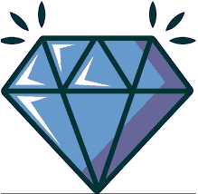

{% comment %}
Represents one crystal. Contains photo, information and controls to manage
the crystal. Different appearance depending on context.

Invisible radio buttons and labels  used to show and hide crystal without JS.
{% endcomment %}

<div class="{{class}}" id="{{plate}}-{{well}}-{{container}}">
	<div>
		<p class="well-name">{{well}}</p>	
			
		
		
		<input id="{{plate}}-{{container}}-{{well}}-checkbox" class="show" type="radio" name="{{plate}}-{{container}}-{{well}}-radiogroup" hidden>
		<label class="show-icon" for="{{plate}}-{{container}}-{{well}}-checkbox">
			
		</label>
		<label class="hide-icon" for="{{plate}}-{{container}}-{{well}}-hide">	
			
		</label>

		<div class="infobox">
			<span class="right"><strong>X:</strong></span><span>[data]</span>
			<span class="right"><strong>Y:</strong></span><span>[data]</span>
			<span class="right"><strong>Score:</strong></span> <span>[data]</span>
		</div>
		<input id="{{plate}}-{{container}}-{{well}}-hide" class="show" type="radio" name="{{plate}}-{{container}}-{{well}}-radiogroup" hidden>
		 
	</div>
</div>
